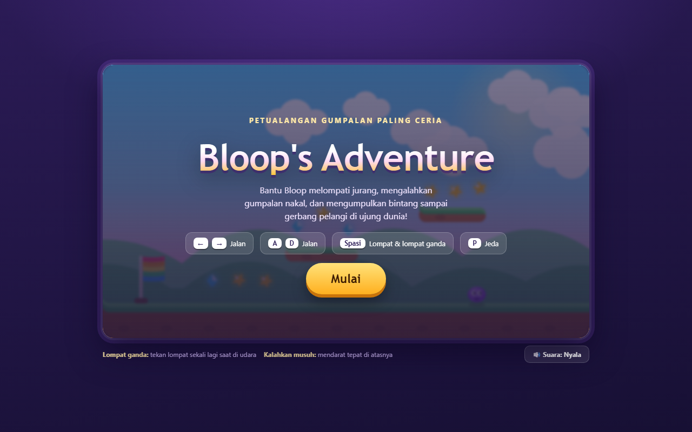

Praktik Langsung
Setiap pertemuan anak pulang membawa karya digital buatannya sendiri, bukan sekadar catatan.
Di Future Makers, anak tidak hanya memakai teknologi. Mereka belajar mengobrol dengan Claude dan ChatGPT untuk membuat game dan website pertamanya, dipandu mentor dalam kelas kecil yang hangat.
Belajar AI bukan soal menghafal istilah. Anak diajak mencoba, salah, memperbaiki, lalu bangga pada hasilnya.
Setiap pertemuan anak pulang membawa karya digital buatannya sendiri, bukan sekadar catatan.
Membuat game melatih anak memecah masalah besar menjadi langkah-langkah kecil yang runtut.
Hanya 8 anak per kelas, jadi setiap peserta terpantau dan dibantu saat kesulitan.
Anak menutup kelas dengan sertifikat dan portofolio digital pertama yang bisa dibagikan.
Anak belajar batas dan etika memakai AI: apa yang boleh dibagikan, apa yang harus ditanyakan ke orang tua.
Materi mudah diikuti tanpa latar belakang teknis, dan orang tua diundang hadir saat Demo Day.
Contoh alur kelas Group batch November 2026, setiap hari Minggu pukul 15.00 WIB. Satu pertemuan satu misi, sehingga anak selalu pulang membawa hasil.
Cara ngobrol dengan Claude dan ChatGPT, menyusun prompt yang jelas, dan aturan aman memakai AI.
Dari ide di kepala jadi game yang benar-benar bisa dimainkan, dibantu AI langkah demi langkah.
Membuat halaman web pribadi untuk memajang seluruh karya yang sudah dibuat anak.
Anak mempresentasikan karyanya di depan orang tua, lalu menerima sertifikat.
Belajar berdua dengan mentor, dengan ritme yang menyesuaikan anak.
Cocok untuk anak yang butuh perhatian penuh, ingin belajar sesuai minatnya, atau jadwalnya sulit mengikuti kelas Group.
Lihat Kelas PrivateBelajar bareng teman dalam kelas kecil, maksimal 8 anak.
Seru karena saling berbagi ide, ditutup dengan Demo Day di depan orang tua. Batch November 2026 sedang dibuka.
Lihat Kelas GroupSilakan mainkan bersama si kecil. Game seperti inilah yang akan dipelajari anak untuk dibuat sendiri.
Game petualangan dua sahabat yang dibuat dengan bantuan AI. Contoh yang dipelajari di pertemuan 2.
Mainkan
Petualangan si Bloop melewati rintangan, dibuat langsung dari ide dan prompt.
MainkanKuis seru untuk mengenal keindahan dan budaya Indonesia.
Mainkan
Riki adalah AI Marketing Strategist asal Indonesia yang sehari-hari memakai AI untuk bekerja. Lewat Future Makers, ia membawa pengalaman itu ke kelas anak dalam bahasa yang sederhana: apa itu AI, bagaimana bertanya dengan baik, dan bagaimana memakainya dengan aman.
Kelas dibuat kecil dan hangat supaya setiap anak berani bertanya, mencoba, dan bangga pada hasil kerjanya.
Boleh. Kelas ini dirancang untuk pemula. Semua langkah dipandu mentor, dan materinya disesuaikan dengan usia masing-masing anak.
Satu kelas, tetapi tingkat tantangan tiap anak disesuaikan. Karena pesertanya hanya 8, mentor bisa memberi materi yang pas untuk anak yang lebih kecil maupun yang lebih besar.
Sangat disarankan agar anak terbiasa dengan perangkatnya sendiri. Kalau tidak ada, sampaikan saat mendaftar lewat WhatsApp supaya kami siapkan solusinya.
Pembayaran lewat transfer bank. Setelah Anda konfirmasi seat lewat WhatsApp, kami kirimkan detail rekening dan instruksinya. Seat baru terkunci setelah pembayaran diterima.
Kelas diadakan secara offline di Yogyakarta. Alamat lengkap dan titik lokasi dikirim lewat WhatsApp setelah pendaftaran dikonfirmasi.
Kirim nama anak, usia, dan nama orang tua lewat WhatsApp. Kami balas dengan ketersediaan seat dan detail pendaftarannya.
Daftar via WhatsApp